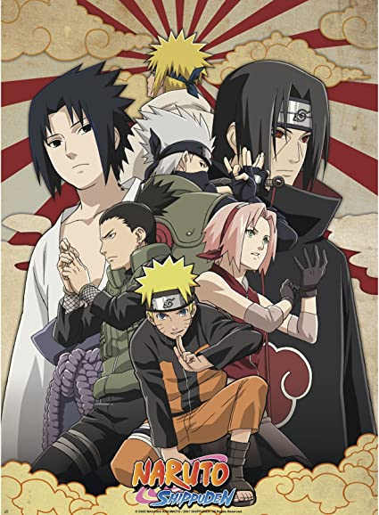
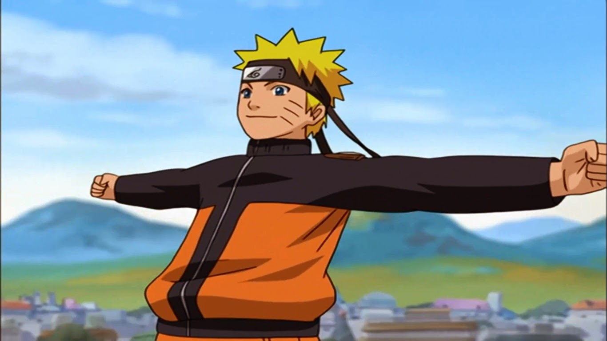
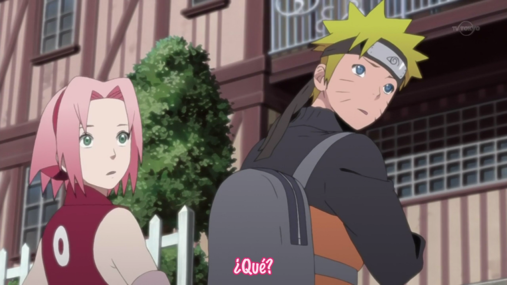
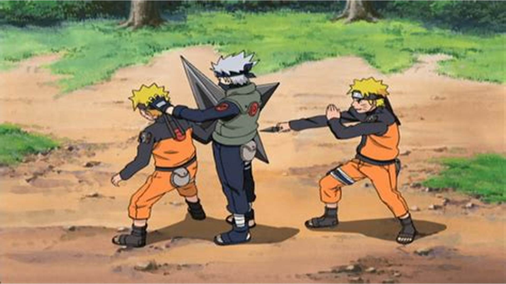
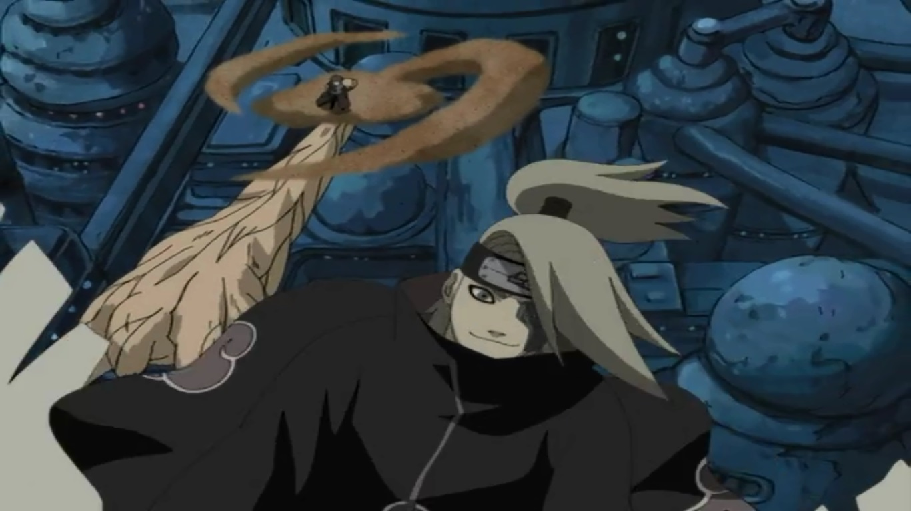
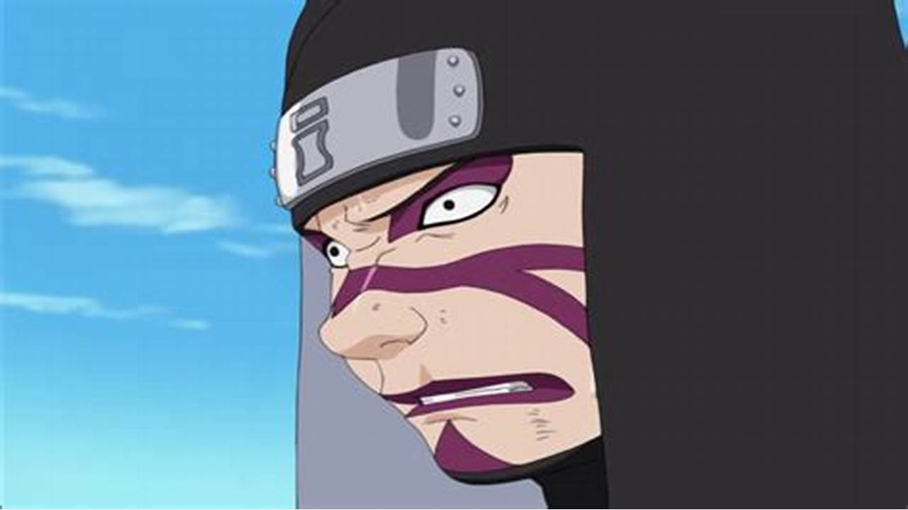

Naruto Shippuden
- Tipo: Serie
- Genero: Shōnen
- Emitido: Feb 15 de 2007 a Mar 23 de 2017
- Estado: Concluido
Naruto Shippuden / Shippuuden Pasan dos años después de que Naruto y Sakura se fueran a entrenar cada uno con su maestro sannin, en este caso, Naruto se fue con Jiraya y Sakura con Tsunade. Ya tienen 14 años y son unos geniales ninjas, Naruto ha aprendido muchas técnicas nuevas y ha perfeccionado el Kage Bunshin aparte de otras que ya las verán a lo largo de la serie, más una técnica secreta. Sakura ha aprendido todo sobre la medicina ninja, y se ha convertido en una ninja médico. Los otros personajes sin olvidarlos, también han evolucionado subiendo de rango de ninja (todos menos Naruto) y también los temas amorosos, Shikamaru ya tiene novia. Pero durante esos 2 años, los Akatsuki se han preparado para lo que viene. Empiezan a mover ficha yendo a buscar a los 9 demonios de chakra legendario (Kyubi, Shukaku de la arena y siete más).
CAPITULOS





